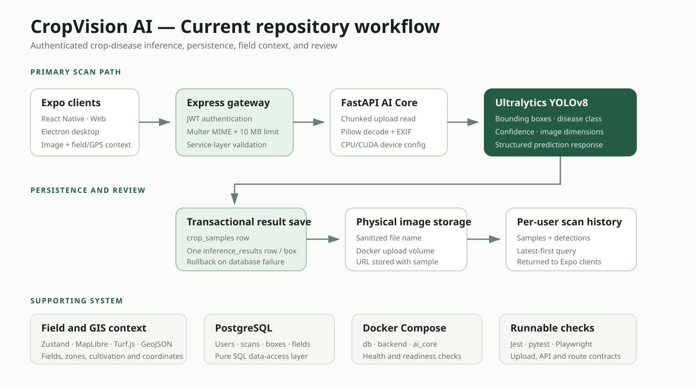
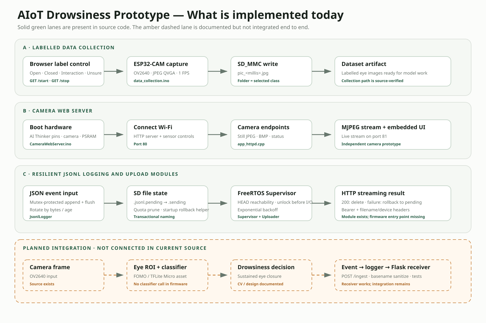
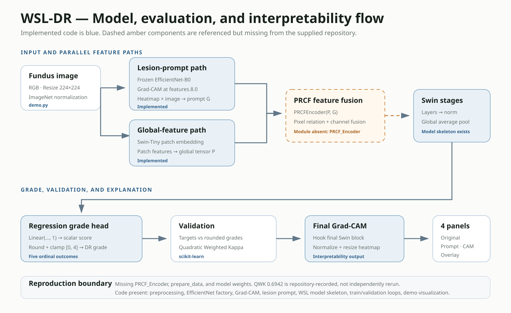

Computer Vision
YOLOv8 inference, object detection, image classification, preprocessing, Grad-CAM, medical-image analysis
Open to internship opportunities
Computer Vision & Applied AI Student
I turn computer vision models into practical, testable workflows. My work currently covers an authenticated crop-disease platform, interpretable diabetic-retinopathy research, and ESP32-CAM building blocks for offline vision and resilient event logging.
01 / About
I am a Computer Science student specializing in Computer Vision at the University of Science, VNU-HCM, with expected graduation in December 2026. I care about the engineering around a model as much as the model itself: reliable inputs, explainable outputs, measurable evaluation, persisted results, and operation under real hardware or network constraints.
Across agriculture, medical imaging, and embedded vision, I focus on making each prototype understandable and usable—not simply producing a checkpoint. I am looking for an internship where I can contribute to practical Computer Vision, Applied AI, or Edge AI work and learn from a strong engineering team.
02 / Technical focus
Selected from the supplied CVs and project repositories.
YOLOv8 inference, object detection, image classification, preprocessing, Grad-CAM, medical-image analysis
PyTorch, EfficientNet-B0, Swin Transformer, QWK evaluation, scikit-learn, NumPy
FastAPI, Node.js, React Native, Express.js, REST APIs, JWT, PostgreSQL, Docker Compose, pytest, CI/CD
C/C++, ESP32-CAM, OV2640, TensorFlow Lite Micro, ESP-DL, Edge Impulse / FOMO, FreeRTOS, SD logging, Wi-Fi recovery
03 / Selected work
Each case study separates demonstrated work from limitations and next steps.
Graduation project · In progress
Crop Disease Detection Platform
CropVision moves crop-disease detection beyond a model notebook. Expo clients submit field-linked images, Express coordinates authenticated scans, FastAPI runs YOLOv8, and PostgreSQL keeps the resulting detections available for review.
Repository evidence
POST /api/inference/analyze uses JWT and Multer with a 10 MB MIME-checked upload boundary./predict reads images in chunks and returns coordinates, class names, confidence, and image dimensions.
A single disease identification model faces difficulties in reaching real-world users.
Automating many manual agricultural monitoring processes through computer vision applications allows for the management, monitoring, and analysis of crop data.
I joined as a project manager, full-stack developer, devOps specialist, and AI engineer.
Develop a desktop application using ElectronJS and a mobile application using React Native. Use PostgreSQL for the database. Build APIs between AI services. Set up a CI/CD workflow using GitLab.
After a short period of development, the project now has two applications: desktop and mobile. One for managers, and one for farmers. These meet the initial basic needs of the model, and the field management features have also been developed.
Limitations exist in its ability to process single images; it cannot yet be expanded to handle video processing and live streaming. The source code structure is not optimized, and scalability, maintainability, and security still present many issues. There are no real-world users, and the AI inference service has not yet been measured or optimized.
Expand the scope of application, creating a comprehensive ecosystem for orchard management. Develop desktop and mobile applications for this ecosystem. Enhance disease detection capabilities across various crops through improvements to the core detection model. Develop and integrate the model into edge devices with smaller parameters, ensuring resource efficiency and cost optimization. Design UAVs to automate manual monitoring processes.
Academic prototype
Edge AI for Driver Safety
This repository captures the working pieces of an ESP32-CAM drowsiness prototype: labelled eye-image collection, a camera web server, durable SD logging, and retryable upload. The eye-state model is documented separately and is not yet wired into one end-to-end firmware.
Repository evidence
.pending → .sending, streams to Flask, then deletes on HTTP 200 or rolls back with backoff.
The drowsiness warning systems in older vehicles are limited in terms of technology and equipment. The input images were too small; when compressed to the 96x96 resolution of the model, the data lost all its features, resulting in a small model that could not make accurate predictions.
To create a compact, cost-effective device that solves the problem of falling asleep at the wheel in cars.
I participated in the roles of project manager, lead coder, data collector and analyst, and model trainer and tuner.
The pipeline is divided into two stages with two small models for processing. Instead of a model that takes the entire face as input, compresses it, and processes it, I use a FOMO (Fast Object, More Object) model from the esp32 library. This model captures the main eye segment, called the ROI. The ROI is then sent to MobileNet for processing. Because when the ROI is cropped, it retains its size even after compression, so the effect is not significantly impacted. As a result, the model learns the data well and achieves good recognition performance in the experimental environment.
The test results in the laboratory environment were very good. The model achieved an accuracy of > 80% with 3FPS and a latency of 200-500ms.
The limitations lie in two things: the processor chip and the camera used to capture input data. The ESP32 generates a lot of heat after a short time, affecting the performance and inference speed of the model. The quality of the input images is also limited. The biggest problem is lighting, such as low light, backlighting, or nighttime shots. Therefore, it might be worth considering upgrading to a more adequate chip, changing the camera resolution, and using a dedicated camera to overcome these issues.
The project could later develop in a more robust direction. Since the chip is capable of independent processing, it can be researched and integrated into other edge devices, and UAVs are a strong direction in this regard.
Research implementation
Weakly Supervised Diabetic Retinopathy Grading

WSL-DR studies five-grade diabetic-retinopathy prediction without pixel-level lesion labels. EfficientNet and Grad-CAM create a lesion-aware prompt, Swin features provide global context, and QWK measures agreement across ordinal grades.

Repository evidence
demo.py performs 224×224 preprocessing, checkpoint loading, grade prediction, and four-panel visualization.wsl_dr_models.py defines the EfficientNet prompt path, Swin path, PRCF call, regression head, and QWK validation.PRCF_Encoder, prepare_data, and model weights, so end-to-end reproduction is blocked.Detailed lesion annotations are expensive. Weak supervision investigates whether image-level labels can support grading while still producing lesion-aware visual explanations.
Study medical-image model design and interpretation in a setting where annotation detail is limited.
Implemented the five-class PyTorch grading pipeline, EfficientNet-B0 attention module, Swin Transformer backbone, PRCF feature fusion, Grad-CAM outputs, and QWK evaluation.
An EfficientNet attention module produces a lesion prompt, PRCF fuses it with Swin patch features, and the remaining Swin stages produce a grade. Grad-CAM supports inspection of model attention.
The repository records a validation QWK of 0.6942 and includes a CLI demo for grade prediction and four-panel attention visualization.
The resources available for training are insufficient, and optimizing the architecture to achieve maximum accuracy is challenging. CNNs are quite resource-intensive and consume a lot of resources.
Document dataset preparation, add experiment tracking, compare backbones, publish a clearer evaluation report, and validate on an external dataset.
04 / Research output
Journal article · January 2026
Contributed as a co-author to a paper on explainable YOLO-based crop leaf disease detection in Vietnam.
05 / Why this work matters
Computer vision can support crop-disease detection and field-monitoring workflows.
Local processing and store-and-forward logging can keep a prototype useful through unstable connectivity.
Interpretability tools can make model behavior easier to inspect, while remaining separate from clinical proof.
Useful AI depends on measurable evaluation and reliable integration—not only a model checkpoint.
CV
Choose the version most relevant to the role.
06 / Contact
I am open to Computer Vision, Applied AI, and Embedded AI internship opportunities.